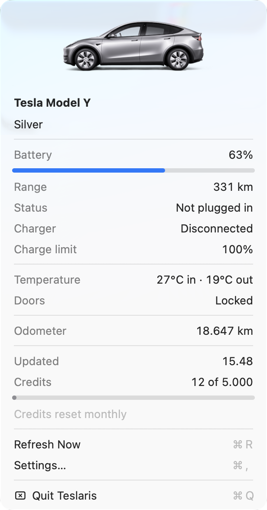

Your Tesla, in the menu bar
Battery, range and charging status at a glance. A tiny native macOS app — no Electron, no accounts, no subscription.
Free and open source · macOS 13+ · Apple silicon & Intel · Not affiliated with Tesla

Render from Tesla's configurator — the same image the app shows for your car.
Effectively free
Tesla meters Fleet API usage per request, and gives individual developers a $10 monthly discount — enough to cover Teslaris's modest polling, so the practical cost is around zero. Tesla does require a payment method on the app, with a billing limit you set to cap any spend. You bring your own developer application, so there's no shared key and no subscription, and your car's data goes straight from Tesla to your Mac.
Small app, sharp focus
Everything you glance at, nothing you don't.
Live, but frugal
Refreshes every 15 minutes when parked. While charging, the cadence scales with time-to-full — down to every minute as the charge finishes. Nothing polls your car to death.
Notifications
Charging started, charging complete, charger lost power. Battery running low, a tyre the car flags as soft, or the car left unlocked with nobody in it. Each one fires once and can be switched off.
Read-only by design
The only scope requested is
vehicle_device_data. Teslaris cannot unlock, wake, or drive your car.
Keychain, not plaintext
Credentials and session tokens live in the macOS Keychain. Nothing is written to disk in the clear.
Never wakes the car
A sleeping Tesla stays asleep — wakes cost credit and battery. You see the last known data, marked as such.
Native and tiny
Pure AppKit, one small binary. No Electron, no SwiftUI, no background services. MIT licensed.

Specifications
vehicle_device_data
One-time setup
Tesla lets your own devices read your own car — you just have to tell Tesla, once, that this Mac is allowed to ask. That's all the setup is. It's free, it takes about ten minutes, and you never touch it again.
The four steps below are short on purpose. Anything fiddly is folded away — open it only if you hit it.
Install Teslaris
Download Teslaris, open the disk image and drag it into Applications. Launch it and it appears in your menu bar, ready for the rest of the setup.
Every release is signed and notarized by Apple, so it opens like any other app — and from then on Teslaris keeps itself up to date.
Rather build it yourself?
Clone the repository and run one make target. It needs macOS 13+ and the
Xcode Command Line Tools (xcode-select --install).
git clone https://github.com/simonbusborg/teslaris && cd teslaris && make appA local build isn't notarized, so the first launch wants a right-click → Open.
Let Teslaris create your key
Tesla asks every app to prove its identity with a security key published on the web. Teslaris does all of it for you: open Settings… and click Set Up Key Hosting. Nothing to type, nothing to understand.
It hands you back a web address — keep it for the next step.
What's actually happening here?
Teslaris creates a key pair on your Mac and publishes only the public half, then fills in the domain for you. The private key never leaves your machine, and a public key is public by design — Tesla downloads it without any authentication.
Create your free Tesla developer app
This is the one part nobody can automate, and the only part that feels technical. Sign in at developer.tesla.com with your normal Tesla account and create a new application — it's free.
Tesla's form asks for a handful of things under unfamiliar names. Don't try to work them out — open the panel below and copy the answers.
What to put in Tesla's form
Two of Tesla's own requirements first, both easy to trip over: your Tesla account needs a verified email and multi-factor authentication enabled, and the application name must be unique across all of Tesla's developers — requests are auto-rejected if the name is taken, so pick something personal rather than "Teslaris".
- OAuth grant type
- Authorization code and machine-to-machine. Teslaris needs both — machine-to-machine registers the app, authorization code reads your car. "Machine-to-machine only" will not work.
- Allowed Origin URL
- The web address Teslaris gave you in step 2, with
https://in front, e.g.https://tesla-5422dc3b98.weareheavy.dev - Allowed Redirect URI
- Exactly this, and nothing else. Tesla refuses to sign users in for a
localhostredirect, so this HTTPS address hands the sign-in straight back to Teslaris on your Mac:https://teslaris-keys.weareheavy.dev/oauth/callback - Allowed Returning URL
- Leave it empty.
- Scope
vehicle_device_data, and nothing else — Teslaris is read-only and needs no other permission.- Payment method
- Required — under Billing and Usage, add a card and set a billing limit (e.g. $10). Tesla disables an app with no payment method, which shows up later as a baffling "No policy rules" error at sign-in. The $10 monthly individual-developer discount covers normal use, so with a billing limit set your real cost stays near zero.
When you're done, keep the Client ID and Client Secret handy — they go into Teslaris in step 4. Select the whole field before copying: the Client ID is exactly 36 characters (8-4-4-4-12), and a paste that drops the last one fails later with a confusing error.
Tesla approves most applications within minutes, but it can take up to a few business days. Until then the next step will fail — that's Tesla's queue, not something you've done wrong.
Paste the two codes, and sign in
Back in Settings…, paste your Client ID and Client Secret, pick your region, and click Register App with Tesla.
Then Save & Sign in with Tesla… — your browser opens Tesla's own login page, you approve it there, and your car appears in the menu bar. That's the last of it.
Questions, answered plainly
Is my data safe?
Your car's data goes straight from Tesla's Fleet API to your Mac — it is never relayed, stored or logged anywhere else, and the car picture comes from Tesla's own public image renderer. Credentials and tokens live in the macOS Keychain, never in plaintext. There is no analytics and no tracking of any kind.
One exception worth naming: if you use Set Up Key Hosting, the app sends your public key once to a small service we run, which publishes it for Tesla to fetch. That is the entire interaction — no car data, no credentials, no account, and a public key is public by design. You can skip it entirely by hosting the key yourself and typing your own domain into Settings.
What exactly does the key hosting service see?
One HTTP request during setup, containing one EC public key. It stores that key and serves it at the path Tesla requires, on a subdomain generated just for you. It never sees your Client Secret, your Tesla login, your VIN or anything about your car — those only ever travel between your Mac and Tesla.
Keys are write-once: nothing can overwrite or replace a published key, there is no way to list them, and the key it serves grants no access to any vehicle — Tesla uses it only to verify that an application controls its domain. The source is in the repository.
Will it wake my car or drain the battery?
No. Teslaris never wakes a sleeping vehicle — it shows the last known data, marked as such, until the car wakes on its own. Wakes cost API credit and drain the battery, so not waking is a feature, not a limitation.
Can it unlock or control the car?
No. The only scope Teslaris ever requests is vehicle_device_data —
read-only. Even if you wanted it to open the trunk, it can't.
Why do I need my own Tesla developer app?
Tesla meters API usage per developer account, with about 5,000 free credits a month. If Teslaris shipped one shared key, all users would drain a single account's credits and the app would have to charge a subscription. With your own free key, your usage stays inside your own free credits — forever free, structurally.
Can the API costs run away?
No — four layers prevent it. Polling adapts to state (15 min parked, 5→1 min while charging, 30 min asleep); the menu shows a credit gauge — the free monthly credit covers ~5,000 requests, shown on a progress bar that resets monthly; past ~84% of the credits, Teslaris stretches all polling to 30 minutes or more — slow enough that what is left lasts until they reset — and pauses it if they run out; and Tesla requires a payment method on the app with a billing limit you set, which it never charges past. The $10 monthly individual-developer discount covers normal use, so the practical cost is around zero — but note the payment method is mandatory: without one Tesla disables the app and sign-in fails.
Which cars are supported?
Model S, 3, X and Y, in North America / Asia-Pacific and Europe / Middle East / Africa. Cybertruck works too, minus the car picture. China isn't supported yet (Tesla uses a separate auth system there).
Is this a Tesla product?
No. Teslaris is an independent, MIT-licensed open source project and is not affiliated with, endorsed by, or sponsored by Tesla, Inc. "Tesla" and the model names are Tesla's trademarks, used only to describe compatibility.